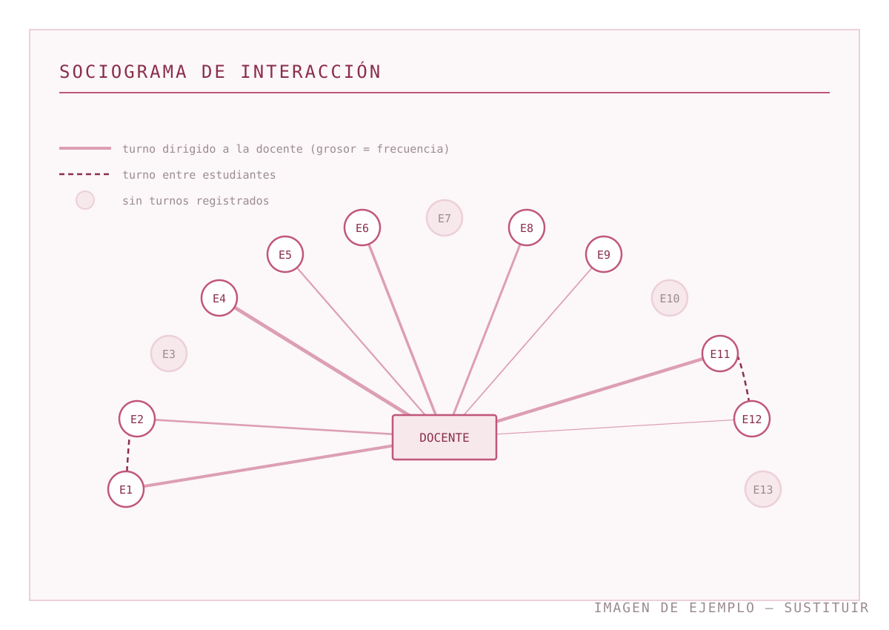

Módulo M07 · Prácticas y portafolio docente · Semestre de verano 2026
Aprender a enseñar, observándome enseñar
Portafolio de las prácticas docentes realizadas en el Sprachenzentrum de la Universidad de Stuttgart.
Reúne las evidencias de observación e impartición que considero significativas y la reflexión que he
construido sobre ellas a lo largo de [número] semanas.
«¿Qué tipo de docente quiero llegar a ser?»
La pregunta con la que abro y cierro este portafolio
Vídeo de presentación
Grabación propia, de aproximadamente 4 min. Presentación breve que se complementa y profundiza en el apartado punto de partida.
Alumna
Laura Gabriela Frank
Módulo
M07 · Prácticas y portafolio docente
Docente del módulo
Carmen Ramos
01 · Antes de empezar
Punto de partida
Esta reflexión la escribí [fecha], antes de la primera sesión de observación.
La dejo tal como la redacté entonces: es la referencia con la que contrasto, al final del portafolio, lo que
he aprendido.
Objetivos de este portafolio
Me propongo tres objetivos realistas para estas cuatro semanas. No pretendo resolver todas mis dudas
docentes, sino documentar con honestidad un tramo corto de mi formación:
Reunir evidencias comparables. Ya que tengo la oportunidad de observar dos grupos en distintos niveles, me interesa observar las clases enfocándome en diversos aspectos como gestión de aula, instrucciones, trabajo de destrezas o gramática, apoyada de fichas de observación y notas con el fin de poder reflexionar y comparar cómo cambian estos aspectos según el nivel.
Poner en relación teoría y aula. Vincular cada muestra con conceptos concretos
trabajados en los módulos del máster, para descubrir cómo funciona la conexión entre teoría y práctica.
Reflexionar sobre mi actuación docente. Hasta ahora he tenido la experiencia de trabajar como maestra de idiomas desde hace 3 años, sin embargo, debido a falta de tiempo, no me he podido cuestionar si mi actuación docente es la mejor. A través del portafolio me gustaría descubrir mejor cómo es mi desarrollo dando clase, apoyada de los ojos de mi tutora.
Cómo percibo mi formación docente en este momento
Empiezo las prácticas con mucha emoción y nervios al mismo tiempo. En este momento tengo una buena base teórica que se ha ido acentando a lo largo de la maestría. El aprendizaje de los nuevos conceptos del primer semestre, así como los que hemos ido aprendiendo en el segundo, han ido cambiando y formando nuevas perspectivas didácticas que me emociona emplear en el aula. Conceptos como el andamiaje, instrucciones, habla del docente, evaluación y feedback, uso de medios digitales, detrezas y gramática en el aula, es lo que hemos ido aprendiendo hasta ahora y creo que es el momento adecuado para llevarlo a la realidad docente.
Mi experiencia docente previa
Hasta ahora, como lo he mencionado anteriormente he podido desarrollarme profesionalmente en el ámbito de la docencia, pero no en la ensenanza del espanol. Desde hace 3 anos doy clases de alemán en cursos de integración. En los cursos he tenido la oportunidad de desarrollar diversas habilidades como gestion del aula, instrucciones, agrupamientos, evaluacion y feedback, y muchas situaciones con las que uno como docente debe contar. creo que la ensenanza de idiomas tiene diversas semejanzas y por ello pienso que mi experiencia actual me puede ayudar directamente. al menos hasta ahora los conceptos que he aprendido en la maestría los he podido aplicar directamente a mis clases, aun si no se tratan de espanol.
Mis objetivos formativos y profesionales
A corto plazo quiero consolidar una práctica de aula coherente con el enfoque orientado a la acción:
tareas con un producto final claro, lengua al servicio de ese producto y evaluación alineada con lo que
realmente se ha practicado. A medio plazo, mi objetivo profesional es
[p. ej.: trabajar en un centro de idiomas con cursos generales e intensivos /
especializarme en español con fines específicos / preparar exámenes DELE].
Mis fortalezas
Genero un clima cálido. Me importa mucho que el aula sea un lugar seguro, donde equivocarse no cueste nada, y creo que eso se nota.
Sé gestionar un grupo, por los tres años en cursos de integración.
Manejo con soltura recursos digitales y los integro con una función clara, no decorativa.
Mis inquietudes
El español es mi lengua materna, y aunque eso puede ser una ventaja, es un punto ciego a la vez. Ya que lo aprendí de niña, me da la impresión de que muchas reglas las tengo automatizadas sin haberlas pensado nunca. Todavía no estoy segura de cómo explicar lo que hago intuitivamente.
También me inquieta el tema de las variaciones del español. He notado que muchos de los manuales utilizan la variación española (vosotros), la cual personalmente nunca me enseñaron a conjugar en la escuela. Será un reto interesante.
Qué tipo de docente quiero llegar a ser
Quiero llegar a ser una persona docente que escucha antes de explicar. Me imagino en un
aula en la que las decisiones no las tomo solo yo desde la planificación, sino que las tomo con lo que
observo: qué han entendido, qué evitan decir, qué hipótesis están construyendo sobre la lengua.
Reconozco que hoy mi seguridad depende mucho del guion. Quiero que dependa cada vez más de la lectura
del grupo, y que el guion sea un apoyo que puedo abandonar sin sentir que pierdo el control de la clase.
02 · Dónde ocurre todo esto
Contexto de las prácticas
Las evidencias de este portafolio solo se entienden con el contexto delante: el tipo de centro, el
alumnado y las condiciones de cada grupo explican buena parte de las decisiones que tomé.
Centro
Sprachenzentrum, Universidad de Stuttgart
Ciudad / País
Stuttgart, Alemania
Modalidad
Presencial
Observación
10 horas académicas (UE)
Impartición
4 horas académicas (UE)
Periodo
19/05/2026 - 16/06/2026
El Centro de Idiomas de la Universidad de Stuttgart ofrece un programa diferenciado de cursos en 14 idiomas, entre ellos español, francés, italiano, inglés y alemán como lengua extranjera. Además, ofrece actividades orientadas al desarrollo de competencias metodológicas, comunicativas, interculturales, personales y sociales. (Universität Stuttgart, s. f.)
Figura 1. Centro de idiomas de la Universidad de
Stuttgart.
Nota. Tomado de [Fotografía del edificio del
Sprachenzentrum], por Sprachenzentrum der Universität Stuttgart,
s. f. (https://www.sz.uni-stuttgart.de/).
Grupos con los que Trabajé:
Grupo
Nivel (MCER)
Nº de estudiantes
L1
Sesiones
Grupo 1
A1
13
Alemán
3
Grupo 2
B1
18
Alemán
4
Figura 2. Distribución del aula del grupo
[Grupo 1]. Las mesas son fijas y crean dos
orientaciones distintas en la misma sala: quienes se sientan en los
laterales miran hacia el centro y quienes ocupan las mesas centrales
miran hacia la pizarra. Esa doble orientación condiciona los
agrupamientos y reaparece en el sociograma de la Muestra 2.
Plano de elaboración propia a partir de la
disposición observada en clase.
03 · Mirar con instrumentos
Observación de clases
Observé [00] horas académicas repartidas en
[0] sesiones. De todas las fichas cumplimentadas he seleccionado dos
muestras: la primera porque me mostró un punto ciego, y la segunda porque me obligó a cambiar de
instrumento para poder ver lo que quería ver.
Registro de las sesiones observadas
Fecha
Grupo / nivel
Duración
Foco de observación
Instrumento
[dd/mm]
[Grupo 1 · A2]
[90 min]
Instrucciones y gestión de transiciones
Ficha de observación focalizada
[dd/mm]
[Grupo 1 · A2]
[90 min]
Tratamiento del error en producción oral
Ficha de observación focalizada
[dd/mm]
[Grupo 2 · B1]
[90 min]
Patrones de participación
Sociograma de interacción
[dd/mm]
[Grupo 2 · B1]
[90 min]
[Foco]
[Instrumento]
Muestra 1
Ficha de observación focalizada: rol del profesor y del alumno
Esta ficha tiene como objetivo documentar la observación en torno a cómo viven docente y alumnos/-as su
papel en el aula, identificando estrategias docentes para gestionar esos roles.
Observadora
Laura Gabriela Frank
Fecha
08/06/2026
Hora
13:30
Centro educativo
Sprachenzentrum Universität Stuttgart
Docente
Soledad Gigli
Clase / grupo / nivel
B1
Registro de la sesión · rol del profesor y del alumno
Tiempo
Fase de la clase
Rol del alumno
Rol del profesor
Estrategia docente
13:30 – 13:50
Tema: Anuncios/Publicidad
Introducción al tema del día. Se observan las fotos del libro y se hacen suposiciones sobre ellas.
Empiezan a externar sus suposiciones sobre el tema de las fotos.
La profesora explica, a partir de las fotos de publicidad del libro, las perífrasis verbales.
Escribe ejemplos en el pizarrón:
Seguir + gerundio
Dejar de + infinitivo
Empezar a + infinitivo
Activación de conocimientos previos para promover la interacción grupal.
Apoyo visual en el pizarrón.
13:51 – 14:15
Interacción entre alumnos / Trabajo en parejas.
Fragmento literal de la instrucción:
«Cada grupo toma un anuncio y hace un análisis.»
Al final de la actividad cada pareja comparte en gran grupo el análisis realizado, a través de un andamiaje guiado de la docente.
Describir las imágenes con ayuda de las preguntas propuestas por el libro. Interactuar entre ellos en español.
Se encarga de dar la instrucción y comprobar que se realicen los grupos.
Se proporciona feedback reformulando frases para corregirlas.
Gestión del agrupamiento.
Trabajo cooperativo con andamiaje del material didáctico.
Feedback correctivo implícito (reformulación).
14:16 – 14:35
Interacción docente – alumno.
Los anuncios fueron tomados de Greenpeace, por lo que empieza un pequeño debate sobre el cambio climático.
Los alumnos expresan su opinión sobre la organización Greenpeace.
La docente guía el debate y plantea preguntas para dirigir la discusión.
Proporciona feedback, tanto a través de reformulaciones como explícito para explicar qué palabra es más adecuada.
Feedback correctivo implícito (reformulación) y explícito.
Interacción alumno – docente – alumno.
14:35 – 15:00
Tema gramatical: Perfecto de subjuntivo
Explicación de gramática a través de un texto de comprensión lectora.
Leen el texto y escuchan atentamente la explicación del nuevo tema.
Los alumnos recuerdan y activan sus conocimientos previos.
Partiendo de un texto en el que se valoran las opiniones, se presentan dos oraciones seleccionadas del texto y a partir de ellas se explica la forma y uso del perfecto de subjuntivo.
Se da un ejemplo externo de la lectura y se hace referencia a los conocimientos previos.
Se explica que el uso del participio funciona igual que el perfecto y pluscuamperfecto.
Enfoque inductivo para explicar la gramática.
15:30 – 15:45
Destreza de comprensión lectora.
Se lee el texto en puesta en común, cada alumno lee hasta el próximo punto. Se analiza en el texto con porcentajes en gran grupo.
Leen el texto y cada alumno tiene un turno para leer en voz alta.
Guía la lectura y gestiona que cada alumno lea en el momento indicado.
Gestión de la participación por turnos.
Puesta en común en gran grupo para analizar los porcentajes.
15:46 – 16:00
Destreza comprensión auditiva.
Basado en las imágenes del libro se relacionan con los audios correspondientes.
Se detectan los problemas de las personas y se analiza si los problemas de ellos tienen solución.
Escuchan el audio y relacionan las imágenes. Participan en gran grupo.
Da las instrucciones necesarias para realizar la actividad y reproduce el audio. Comprueba las respuestas junto con los estudiantes y gestiona la participación para determinar si los problemas tienen solución.
Comprobación conjunta de respuestas.
Nota. El intervalo de 15:00–15:30 no se registró durante la observación. Durante este tiempo se
llevó a cabo una pausa de aproximadamente 10–15 minutos para los alumnos.
[Pegar aquí las notas transcritas tal como las tomé durante la sesión.
Conviene mantener el registro telegráfico original en lugar de reescribirlo en prosa: la
inmediatez es parte de la evidencia.]
Qué aprendí de esta muestra
[Qué esperaba encontrar al observar el reparto de roles y qué encontré
realmente. Apoyarse en momentos concretos de la tabla: el debate sobre Greenpeace, el tipo de
feedback, la lectura en voz alta por turnos.]
Anclaje teórico.[Relacionar con andamiaje, tratamiento del error (reformulación frente a
corrección explícita) y patrones de interacción IRF, indicando módulo y referencia bibliográfica.]
Muestra 2
Sociograma de interacción: quién habla con quién
Fecha
[dd/mm/2026]
Grupo
[Grupo 2 · B1]
Duración del registro
[25 min] de fase de puesta en común
Instrumento
Sociograma de turnos sobre plano del aula
Cambié de instrumento a propósito. La ficha de la Muestra 1 registraba bien lo que hacía la docente,
pero no me dejaba ver la distribución de la participación. Dibujé el plano del aula y tracé una línea
por cada turno de habla, distinguiendo los turnos dirigidos a la docente de los dirigidos a otra
persona del grupo.

Figura 4. Sociograma de la fase de puesta en común. Cada línea es un turno; el grosor indica
frecuencia. Cuatro estudiantes no registran ningún turno.
Elaboración propia sobre plano del aula.
[Si el instrumento está adaptado de una fuente, citarla aquí.]
Qué aprendí de esta muestra
El dibujo tiene forma de estrella: casi todos los turnos pasan por la docente. De
[00] turnos registrados, solo [0]
conectan a dos estudiantes entre sí. La clase me había parecido muy participativa mientras la
observaba, y en cierto sentido lo era: había mucha lengua en el aula. Pero era lengua organizada en
un patrón de pregunta docente, respuesta breve y evaluación docente.
Lo que me llevo no es que ese patrón esté mal —cumple una función en la corrección y en el control
del ritmo—, sino que yo no era capaz de verlo sin un instrumento. Mi percepción
global de «buena clase participativa» se sostenía en el volumen de habla, no en su distribución.
Anclaje teórico. El patrón corresponde a la estructura de interacción IRF
(iniciación–respuesta–feedback) descrita en la investigación sobre discurso de aula, frente a las
estructuras de interacción entre iguales que promueve el trabajo por tareas
([M0X · asignatura]). Conecta también con los criterios de
agrupamiento y de gestión del aula del módulo
[M05 · Gestión de aula y evaluación].
04 · Ponerme delante
Impartición de clases
Impartí [0] horas académicas en
[0] sesiones, planificadas con
[nombre del tutor o de la tutora] para que encajaran en la programación
del curso. Selecciono dos muestras: una secuencia con sus materiales y la grabación de una segunda
sesión.
Sesiones impartidas
Fecha
Grupo / nivel
Duración
Contenido y producto final
[dd/mm]
[Grupo 1 · A2]
[90 min]
[Contenido · producto final de la tarea]
[dd/mm]
[Grupo 2 · B1]
[90 min]
[Contenido · producto final de la tarea]
[dd/mm]
[Grupo 2 · B1]
[90 min]
[Contenido · producto final de la tarea]
Muestra 3
Planificación y materiales de la secuencia [título]
Fecha
[dd/mm/2026]
Grupo
[Grupo 1 · A2]
Duración
[90 min]
Producto final
[Descripción breve]
Ver la planificación completa
Plan de sesión negociado con la tutoría de prácticas
Fase
Objetivo
Actividad
Agrupamiento
Min.
Activación
[Objetivo]
[Actividad]
Grupo clase
[10]
Entrada de input
[Objetivo]
[Actividad]
Individual
[15]
Práctica guiada
[Objetivo]
[Actividad]
Parejas
[20]
Tarea final
[Objetivo]
[Actividad]
Grupos de tres
[30]
Cierre y foco en la forma
[Objetivo]
[Actividad]
Grupo clase
[15]
[Enlazar aquí el PDF de la planificación completa y los materiales
entregados al alumnado.]
Figura 5. Material de elaboración propia para la fase de práctica guiada.
Elaboración propia. Iconos:
[autoría y licencia]. Texto adaptado de
[fuente].
Qué aprendí de esta muestra
Diseñé la secuencia aplicando de forma bastante literal el esquema de la tarea: producto final
definido primero y actividades posibilitadoras hacia atrás. Funcionó en la estructura y falló en el
tiempo. La fase de práctica guiada se comió doce minutos de la tarea final, justo la fase donde
estaba el aprendizaje que decía perseguir.
La decisión que hoy tomaría distinta: recortar la práctica guiada a la mitad y aceptar que el
alumnado llegue a la tarea con menos seguridad. La tarea es el lugar donde se ve qué falta; adelantar
ese momento me habría dado información que la práctica guiada, muy pautada, escondía.
Anclaje teórico. Enfoque orientado a la acción y diseño de tareas
([M0X · asignatura]); criterios de secuenciación y de alineación entre
objetivos, actividades y evaluación
([M05 · Gestión de aula y evaluación]).
Muestra 4
Grabación de la sesión del [dd/mm]
Fecha
[dd/mm/2026]
Grupo
[Grupo 2 · B1]
Fragmento
[min 00:00 – 00:00]
Consentimiento
Informado y por escrito
Grabé la sesión completa y seleccioné el fragmento en el que doy las instrucciones de la tarea final y
abro la primera ronda de trabajo en grupos: es el momento que más me preocupaba antes de las prácticas
y el que había elegido como foco personal.
Aquí va el fragmento de vídeo
[sustituir este bloque por el iframe del vídeo]
Grabación propia. El alumnado firmó un consentimiento informado; el vídeo está alojado como
[no listado / con acceso restringido] y no es indexable.
Audio · Sesión de retroalimentación con la tutoría
Fragmento de [duración] de la sesión de feedback posterior, grabado con
autorización de [nombre].
Tres versiones de la misma clase
Lo que yo percibí mientras daba la clase
Salí con la sensación de haber ido rápido pero bien: las instrucciones me parecieron claras, creí
haber dado tiempo suficiente y recordaba haber circulado por todos los grupos.
Lo que muestra la grabación
El vídeo desmonta dos de las tres cosas. Las instrucciones ocupan
[00] segundos y contienen
[0] ideas encadenadas sin pausa; entre mi pregunta «¿está claro?» y el
inicio de la actividad pasan [0] segundos, muy por debajo del tiempo
de espera que yo creía dar. Sí es cierto que circulo por todos los grupos, pero me detengo
[00] segundos de media en unos y más de dos minutos en el grupo que
está junto a la puerta.
Lo que observó la tutoría de prácticas
[Resumir aquí el feedback recibido con sus propias palabras: qué destacó como
punto fuerte y qué señaló como mejorable.] Coincidimos en el diagnóstico de las
instrucciones; en cambio, ella valoró positivamente algo que yo no había registrado:
[aspecto].
El contraste entre las tres versiones es, para mí, el aprendizaje central de estas prácticas. Mi
percepción no era falsa: era parcial, y se apoyaba en lo que me había propuesto hacer más
que en lo que hice. La grabación no me corrigió: me devolvió datos.
Anclaje teórico. Práctica reflexiva y ciclo de observación de la propia actuación
([M0X · asignatura]); tiempo de espera y su efecto en la extensión de
las respuestas; gestión de la atención docente durante el trabajo en grupos.
05 · Después
Reflexión de cierre
Vuelvo al punto de partida con las evidencias delante. Esta sección tiene dos partes: una
autoevaluación de mi competencia docente hoy y un plan de desarrollo con tres aspectos concretos.
Autoevaluación
Puntos fuertes confirmados
Diseño de materiales y de secuencias. La planificación de la Muestra 3 era
coherente y así lo valoró la tutoría; el problema fue la gestión del tiempo, no el diseño.
Clima de aula. En la grabación se ve un grupo que interrumpe para preguntar sin
pedir permiso. Eso no lo doy por casual.
Disposición a mirarme con instrumentos. Cambiar de ficha a sociograma en la
Muestra 2 fue la mejor decisión metodológica de estas prácticas.
Aspectos mejorables
Instrucciones. Largas, encadenadas y sin comprobación. Es el punto en el que
coinciden mi autopercepción inicial, la observación de la Muestra 1 y el feedback de la tutoría.
Tiempo de espera. Lo mido ahora en segundos y sé que es insuficiente.
Distribución de mi atención. Circulo, pero no de forma equitativa.
Comparando con lo que escribí en el punto de partida, mantengo el diagnóstico —hablo demasiado— pero ha
cambiado su estatus: era una sospecha y ahora es un dato con evidencias asociadas. También ha cambiado
una creencia: ya no pienso que una instrucción clara sea una instrucción completa.
Plan de desarrollo prospectivo
01
Instrucciones breves y comprobadas
Qué haré: escribir la instrucción literal en el plan de cada sesión, con un
máximo de [00] palabras y una tarea de comprobación asociada
(mostrar el ejemplo, pedir que alguien lo reformule, empezar con una pareja mientras el resto
observa). Cuándo: en todas las sesiones de
[curso o contexto siguiente]. Cómo sabré que avanzo: grabaré el audio de una sesión al mes y cronometraré la
duración de las instrucciones.
02
Interacción entre iguales, no solo hacia mí
Qué haré: incorporar en cada sesión al menos una fase en la que la puesta en
común no pase por mí (rotación de portavoces, respuesta encadenada, revisión entre parejas). Cuándo: desde la primera sesión del próximo curso. Cómo sabré que avanzo: repetiré el sociograma de la Muestra 2 en dos momentos del
curso y compararé el número de líneas entre estudiantes.
03
[Tercer aspecto elegido]
Qué haré:[acción concreta y observable]. Cuándo:[plazo]. Cómo sabré que avanzo:[indicador].
Volver a la pregunta del principio
Quería llegar a ser una persona docente que escucha antes de explicar. Después de estas prácticas
matizo la formulación: quiero ser una docente que se da los medios para escuchar
—fichas, grabaciones, sociogramas, una tutoría con quien contrastar—, porque he comprobado que sin
instrumentos mi percepción del aula se parece demasiado a mis intenciones.
06 · De dónde viene todo esto
Referencias y créditos
Referencias bibliográficas citadas en las reflexiones y créditos de todos los materiales multimodales
incluidos en el portafolio.
Referencias bibliográficas
Consejo de Europa (2002). Marco común europeo de referencia para las lenguas: aprendizaje, enseñanza, evaluación. Ministerio de Educación, Cultura y Deporte / Anaya.
Sprachenzentrum der Universität Stuttgart (s. f.). Sprachenzentrum. Universität Stuttgart. Recuperado el [fecha] de https://www.sz.uni-stuttgart.de/
Instituto Cervantes (2006). Plan curricular del Instituto Cervantes. Niveles de referencia para el español. Biblioteca Nueva.
Instituto Cervantes (2012). Las competencias clave del profesorado de lenguas segundas y extranjeras. Instituto Cervantes.
Richards, J. C. y Lockhart, C. (1998). Estrategias de reflexión sobre la enseñanza de idiomas. Cambridge University Press.
Schön, D. A. (1998). El profesional reflexivo: cómo piensan los profesionales cuando actúan. Paidós.
[Añadir las referencias concretas citadas en cada anclaje teórico y comprobar todos los datos antes de la entrega.]
Créditos de imágenes, audio y vídeo
Materiales multimodales
Elemento
Autoría
Licencia o permiso
Figura 1 · Edificio del Sprachenzentrum
Sprachenzentrum der Universität Stuttgart
[Solicitar autorización de uso]
Figura 2 · Plano del aula
Elaboración propia
—
Tabla · Ficha de observación (rol del profesor y del alumno)
Elaboración propia
Adaptada de la ficha n.º 6 del sitio TUSELE (UCLouvain)